Mission 15 · Le plaisir de promenade
15A–C acceptés ; 15D et Mission 15 proposés à la validation artistique finale. Aucune fusion ni mise en ligne. Rapport final · 15C · 15B · 15A.
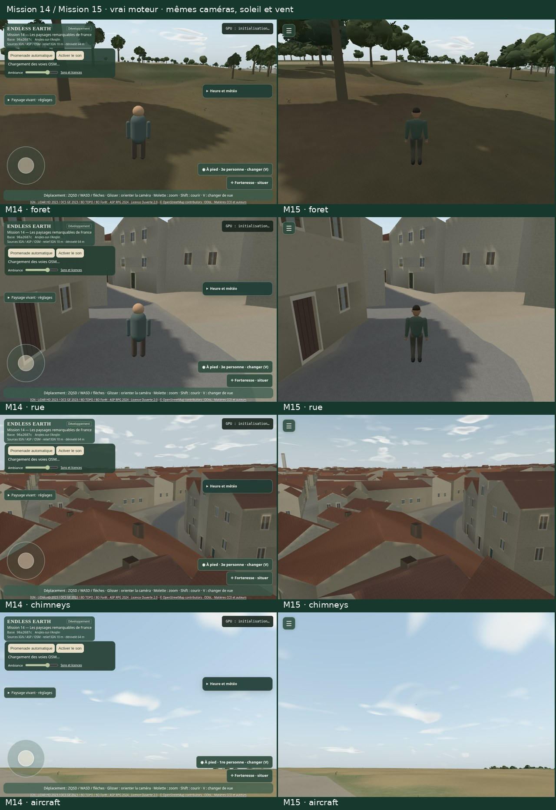
Promenade et événements natifs
Une vraie session continue de 1801.0 secondes et 1530.5 m cumulés. Trois extraits de cette session, deux comparaisons natives M14/M15 et une inspection de fumée. Les inspections rares sont déclarées ; aucune accélération, aucun trajet imposé pendant les films. La cheminée d’inspection est silencieuse ; les autres pistes sont le vrai bus audio. Les films de canevas excluent les contrôles HTML, montrés séparément.
soak-summer · durée native 30.78 ssoak-snow · durée native 35.19 ssoak-natural-flight · durée native 45.98 ssmoke-inspection · durée native 42.29 sM14-native-walk · durée native 60.03 sM15-native-walk · durée native 60.16 s
Avant / après
Vrai moteur, mêmes caméras, soleil et vent. Neige de toiture : dépôt diagnostique verrouillé, ciel clair identique ; M14 n’a pas de neige. Vue rapprochée du modèle distincte de sa taille apparente en vol.
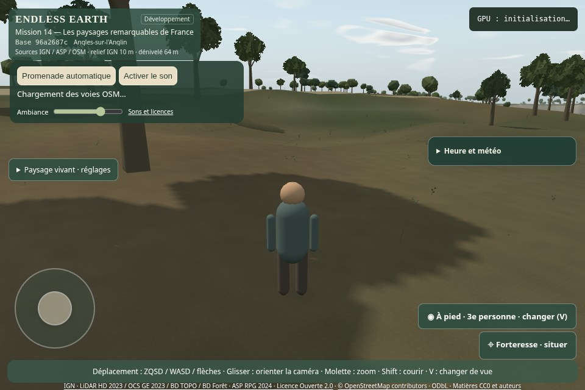
M14 · foret. Actual engine comparison,matched camera/sun/wind.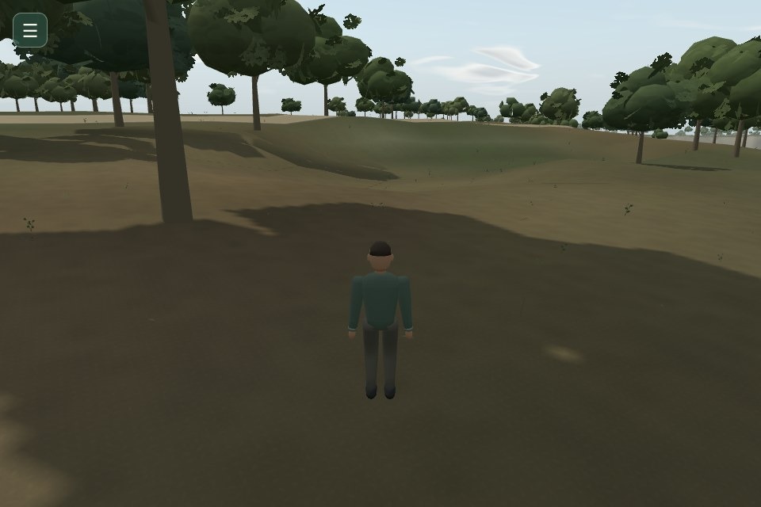
M15 · foret. Actual engine comparison,matched camera/sun/wind.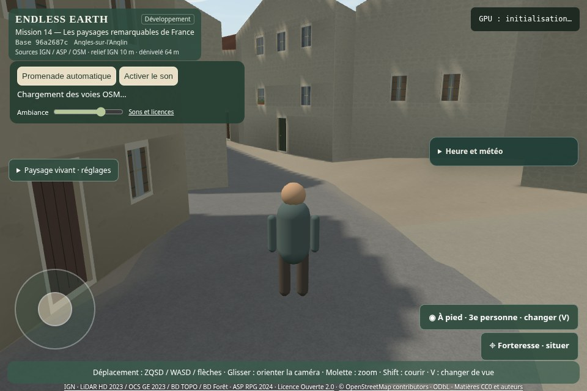
M14 · rue. Actual engine comparison,matched camera/sun/wind.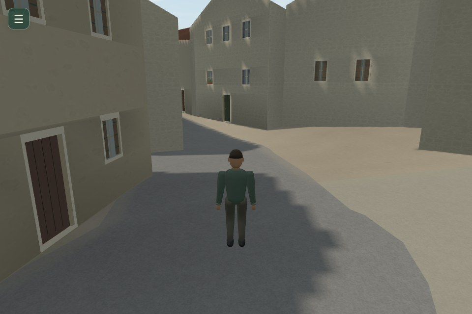
M15 · rue. Actual engine comparison,matched camera/sun/wind.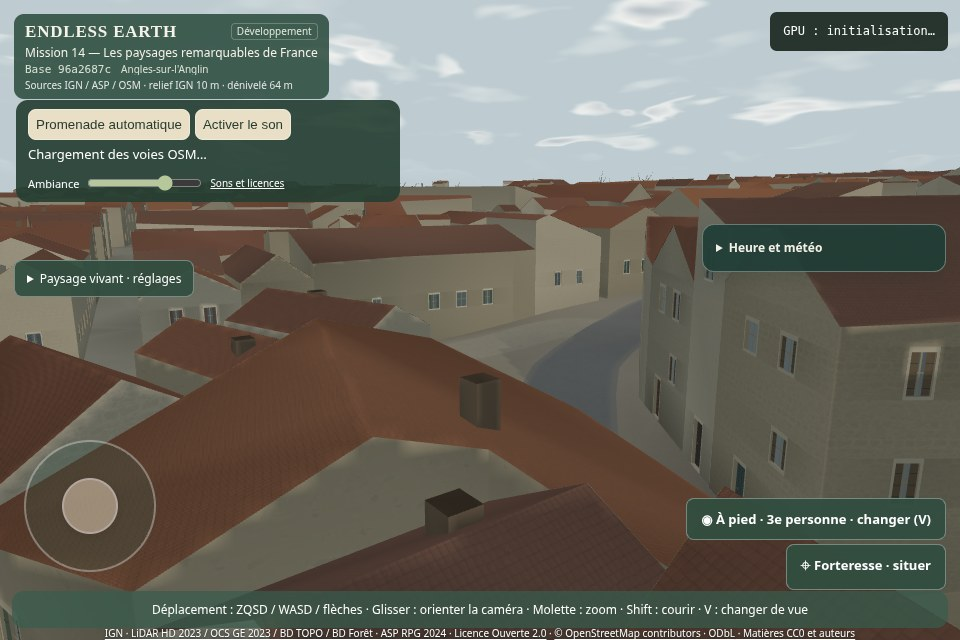
M14 · chimneys. Actual engine comparison,matched camera/sun/wind.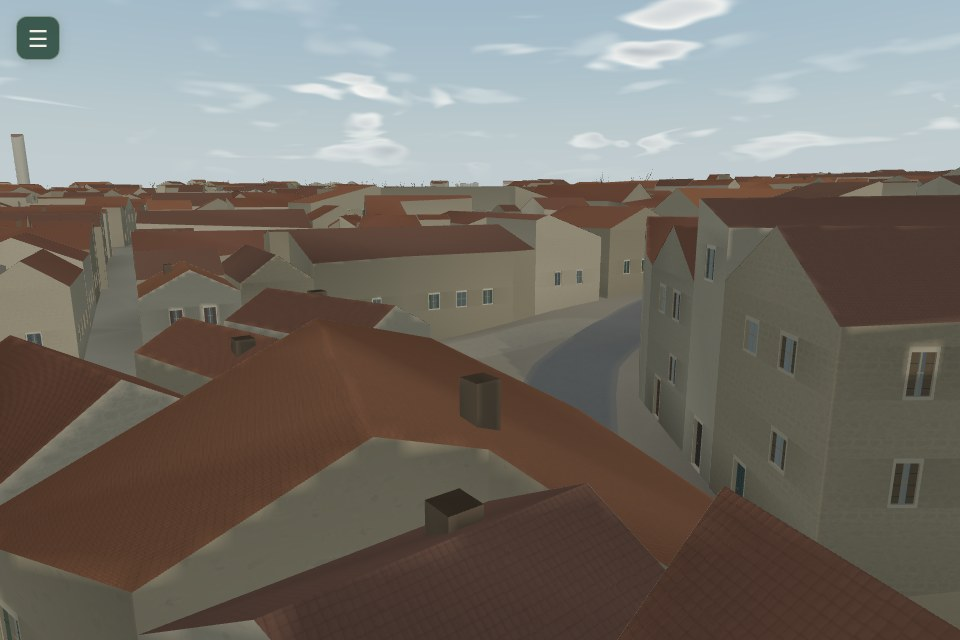
M15 · chimneys. Actual engine comparison,matched camera/sun/wind.M14 · smoke. Explicit diagnostic event inspection;not an ordinary rarity proof.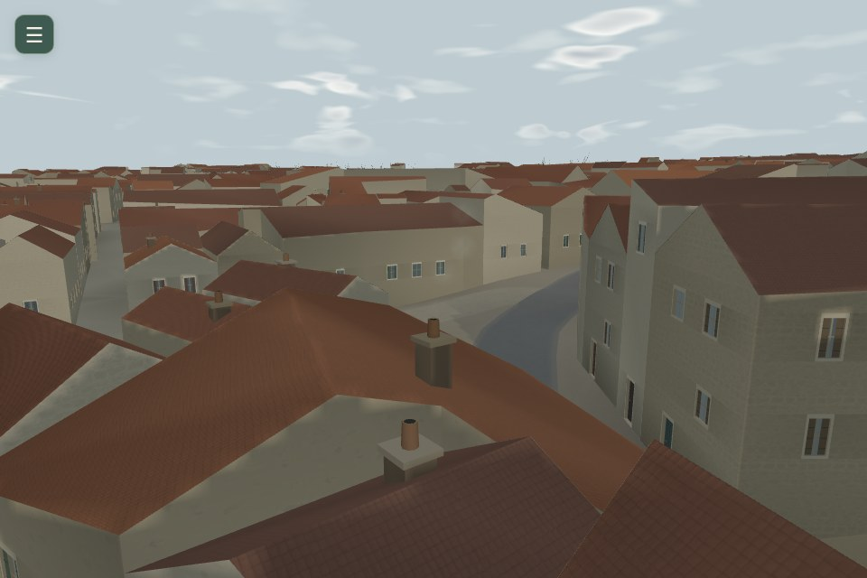
M15 · smoke. Explicit diagnostic event inspection;not an ordinary rarity proof.M14 · snow-roof. Same clear winter lighting;M15 coating locked at0.65 for inspection,M14 has no snow.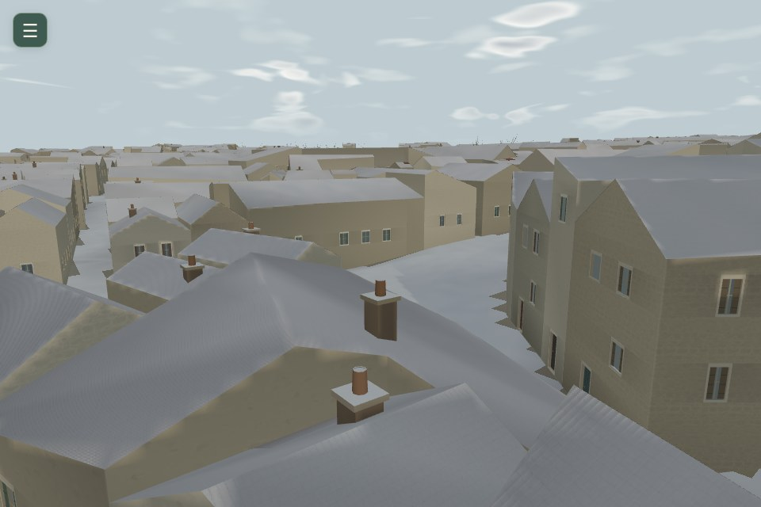
M15 · snow-roof. Same clear winter lighting;M15 coating locked at0.65 for inspection,M14 has no snow.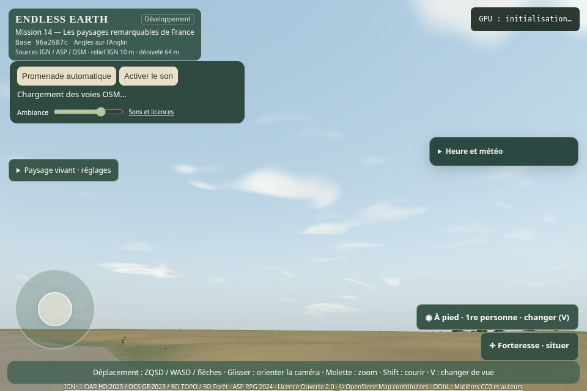
M14 · aircraft. Explicit diagnostic event inspection;not an ordinary rarity proof.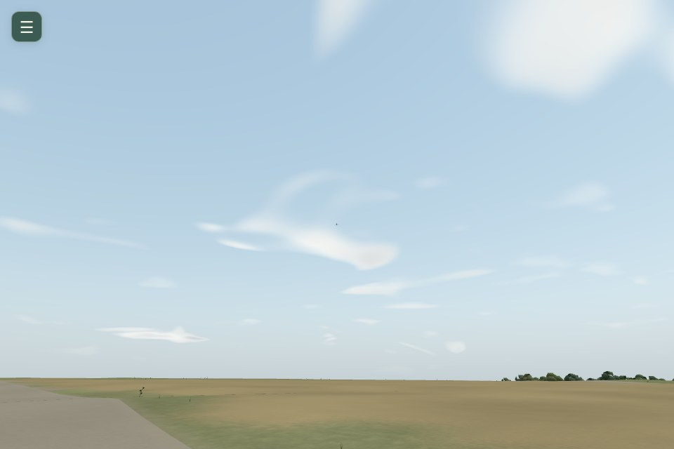
M15 · aircraft. Explicit diagnostic event inspection;not an ordinary rarity proof.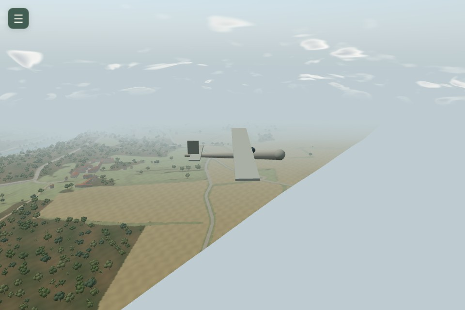
M15 · aircraft-model-inspection. Separate close inspection of the actual authored10.1m wingspan model, not its apparent size during an ordinary flyover.Menu et toucher
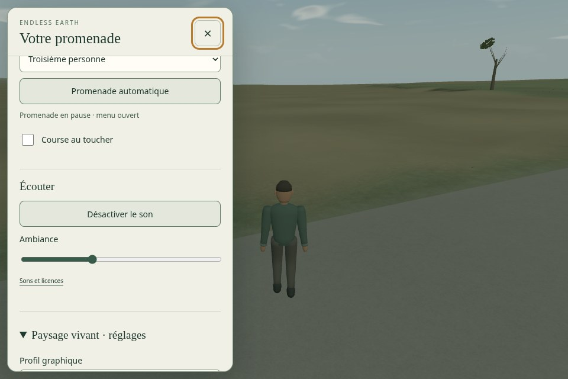
menu-960x640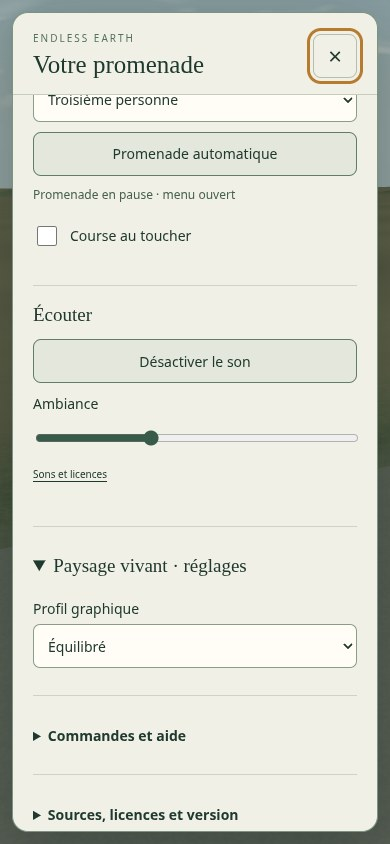
menu-390x844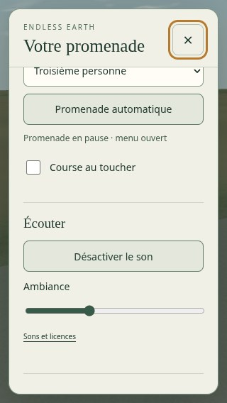
menu-320x568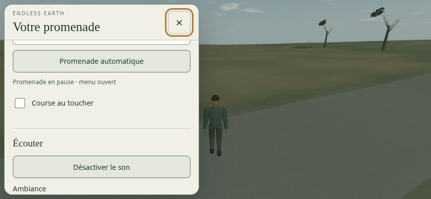
menu-844x390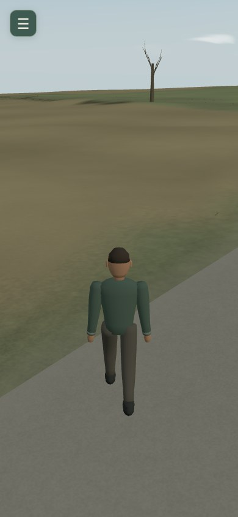
mobile-gesturePreuves et reproduction
Trente minutes réelles · Trace · 324 rendus comparatifs · 486 rendus par effet · Rareté simulée · Cheminées interprétées · Départs · Physique et replis · Ressources et réinitialisations · Décodage et paquets · Droits et préservation · Validation finale · Reproduire.
Mesures SwiftShader uniquement ; aucun FPS de GPU physique ou Android revendiqué. Les effets ne documentent ni trafic réel, ni occupation réelle de maisons. Arrêt pour votre revue artistique, sans fusion ni déploiement.